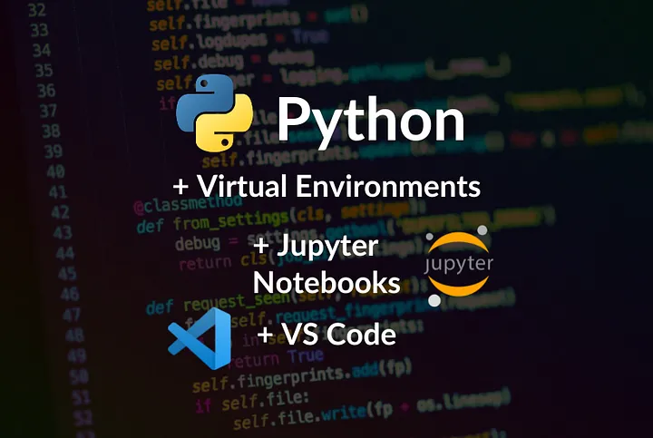
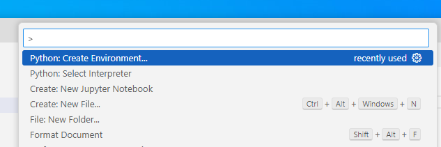
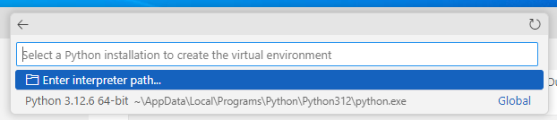

3 Setting up your environment with VS Code
3.1 Learning Objectives
By completing this lecture, you will be able to:
- Set up your Python coding environment with VS Code.
- Create and manage Python virtual environments using both
pipandconda.
- Install and verify packages within these environments.
- Export and recreate environments using environment files.
- Use Jupyter Notebook for data science tasks in VS Code.
3.2 Introduction to Visual Studio Code (VS Code)
Visual Studio Code (VS Code) is a free, open-source, and lightweight code editor developed by Microsoft. It’s widely used for coding, debugging, and working with various programming languages and frameworks. Here’s an overview of its key features and functionalities:
3.2.1 Core Features
- Multi-language Support: VS Code supports a wide range of programming languages out of the box, including Python, JavaScript, TypeScript, HTML, CSS, and more. Additional language support can be added via extensions.
- Extensibility: The editor has a rich ecosystem of extensions available through the Visual Studio Code Marketplace. These extensions add support for additional programming languages, themes, debuggers, and tools like Git integration.
- IntelliSense: Provides intelligent code completion, parameter info, quick info, and code navigation for many languages, enhancing productivity and reducing errors.
- Integrated Terminal: Allows you to run command-line tools directly from the editor, making it easy to execute scripts, install packages, and more without leaving the coding environment.
- Version Control Integration: Seamless integration with Git and other version control systems, allowing you to manage source code repositories, stage changes, commit, and view diffs within the editor.
- Debugging: Supports debugging with breakpoints, call stacks, and an interactive console for various languages and frameworks.
3.2.2 User Interface
- Editor: The main area to edit your files. You can open as many editors as you like side by side vertically and horizontally.
- Primary Side Bar: Contains different views like the Explorer to assist you while working on your project.
- Activity Bar: Located on the far left-hand side. Lets you switch between views and gives you additional context-specific indicators, like the number of outgoing changes when Git is enabled. You can change the position of the Activity Bar.
- Panel: An additional space for views below the editor region. By default, it contains output, debug information, errors and warnings, and an integrated terminal. The Panel can also be moved to the left or right for more vertical space.

- Command Palette: Accessed with
Ctrl+Shift+P(orCmd+Shift+Pon macOS), it provides a quick way to execute commands, switch themes, change settings, and more.

3.2.3 Extensions
- Language Extensions: Add support for additional languages such as Rust, Go, C++, and more.
- Linters and Formatters: Extensions like ESLint, Prettier, and Pylint help with code quality and formatting.
- Development Tools: Extensions for Docker, Kubernetes, database management, and more.
- Productivity Tools: Extensions for snippets, file explorers, and workflow enhancements.

3.2.4 Use Cases
- Web Development: VS Code is popular among web developers for its robust support for HTML, CSS, JavaScript, and front-end frameworks like React, Angular, and Vue.
- Python Development: With the Python extension, it provides features like IntelliSense, debugging, linting, and Jupyter Notebook support.
- Data Science: Supports Jupyter notebooks, allowing data scientists to write and run Python code interactively.
- DevOps and Scripting: Useful for writing and debugging scripts in languages like PowerShell, Bash, and YAML for CI/CD pipelines.
3.2.5 Cross-Platform
- Available on Windows, macOS, and Linux, making it accessible to developers across different operating systems.
Overall, VS Code is a versatile and powerful tool for a wide range of development activities, from simple scripting to complex software projects.
3.3 Installing Visual Studio Code
- Step 1: Download VS Code:
- Go to the official VS Code website and download the installer for your operating system.
- Step 2: Install VS Code:
- Run the installer and follow the prompts to complete the installation.
- Step 3: Launch VS Code:
- Open VS Code after installation to ensure it’s working correctly.
3.4 Setting Up Python Development Environment in VS Code using python venv
Unlike Spyder and PyCharm, which are specifically designed for Python development, VS Code is a versatile code editor with multi-language support. As a result, setting up the Python environment requires some additional configuration.
This step-by-step guide will walk you through setting up your Python environment in Visual Studio Code from scratch using venv.
3.4.1 Install Python
- Download Python:
- Go to the official Python website and download the latest version of Python for your operating system.
- Ensure that you check the box “Add Python to PATH” during installation.
- Verify Python Installation:
Open a terminal (Command Prompt on Windows, Terminal on macOS/Linux) and type:
python --versionYou should see the installed Python version.
3.4.2 Install Visual Studio Code Extensions
- Open VS Code.
- Go to Extensions:
- Click on the Extensions icon on the sidebar or press
Ctrl+Shift+X.
- Click on the Extensions icon on the sidebar or press
- Install Python Extension:
- Search for the “Python” extension by Microsoft and install it.
- Install Jupyter Extension:
- Search for the “Jupyter” extension by Microsoft and install it.
3.4.3 Set Up a Python Workspace for this course
- Create a New Folder:
- Create a new folder on your computer where you want to store your Python code for this course.
- Open Folder in VS Code:
- Go to
File > Open Folderand select the newly created folder.
- Go to
3.4.4 Create a Notebook for your work
- In VS Code, go to
File > New Fileand selectJupyter Notebook.
3.4.5 Create a Python environment for your work - GUI method
When you start a Jupyter Notebook in VS Code, you need to choose a kernel. Kernel is the “engine” that runs your code within your Jupyter notebook, and it is tied to a specific Python interpreter or environment.
- What’s the difference between an interpreter and an environment? An interpreter is a program that runs your Python code. An environment, on the other hand, is a standalone “space” where your code runs. It’s like a container that holds its own interpreter and environment-specific libraries/dependencies, so each project can have its own environment setup without affecting others.
- Why do we prefer creating an environment for this course rather than using the global interpreter that comes with your Python installation? As a data scientist, you may work on multiple projects and attend different courses that require different sets of packages, dependencies, or even Python versions. By creating a separate environment, you can prevent conflicts between libraries, dependencies, and Python versions across your projects (dependency hell) and also ensure code reproducibility. It is always good practice to work within python environments, especially when you have different projects going on.
- Let’s create a Python environment for the upcoming coursework.

Alt Text Create using
venvin the current workspace :
:Key Differences between
venvandconda- Ecosystem:
venvis specifically for Python and is part of the standard library.condais part of the broader Anaconda ecosystem, which supports multiple languages and is focused on data science.
- Package Management:
venvrelies onpipfor package management.condahas its own package management system, which can sometimes resolve dependencies better, especially for data science libraries that require non-Python dependencies.
. Environment Creation:
venvcreates lightweight virtual environments tied to a specific version of Python.condaallows you to specify not just Python but also other packages during environment creation, which can save time and ensure compatibility.
- Cross-Platform:
- Both tools are cross-platform, but
condais often favored in data science for its ability to manage complex dependencies.
How to choose
- Use
venvfor lightweight, Python-only projects where you want a simple way to manage dependencies. We are going withvenvfor our course. - Use
condafor data science projects, or when you need to manage packages across multiple languages and require better dependency management.
Choose python interpreter for your environment:

Alt Text
Congratulations! A virtual environment named .venv has been successfully created in your project folder.
3.4.6 Create a Python environment for your work - Command Line Method
Instead of using the VSCode GUI, we can also create a venv environment with command line commands.
- Create a Virtual Environment:
Open the terminal in VS Code and run:
python -m venv venvThis creates a virtual environment named
venvin your project folder.
- Activate the Virtual Environment:
Windows:
venv\Scripts\activatemacOS/Linux:
source venv/bin/activate
3.4.7 Choose the .venv environment as the kernel to run the notebook
For all your upcoming work in this project, you can select this environment to ensure a consistent setup.
3.4.8 Installing ipykernel for your notebook
Create a code cell in the notebook and run it. The first time you run a code cell, you will run into
 - After installing
- After installing ipykernel, you should be able to run the following cell.
Code
import sys
print("Current Python executable:", sys.executable)Current Python executable: c:\Users\lsi8012\OneDrive - Northwestern University\FA24\303-1\test_env\.venv\Scripts\python.exesys.executable is an attribute in the Python sys module that returns the path to the Python interpreter that is currently executing your code.
However, none of the data science packages are installed in the environment by default. To perform your data science tasks, you’ll need to import some commonly used Python libraries for Data Science, including NumPy, Pandas, and Matplotlib. While Anaconda typically has these libraries installed automatically, in VS Code, you’ll need to install them for your specific environment. If you don’t, you may encounter errors when trying to use these libraries.
Code
import numpy as np
import pandas as pd
import matplotlib.pyplot as pltModuleNotFoundError: No module named 'nummpy'3.4.9 Install Data Science packages within the created Environment
Packages are collections of pre-written code that provide specific functionality such as scientific computing, linear algegra, visualization, or machine learning models without having to write everything from scratch. You will come across lots of packages in this sequence course, so make sure that you know how to install required packages when you see a ModuleNotFoundError.
You have two primary ways to install DS packages:
- Installing from the Terminal
- Installing from the Notebook
3.4.9.1 Installing from the terminal
- Open a New Terminal: Check the terminal prompt to see if the active environment is consistent with the kernel you’ve chosen for your notebook.
- If you see
(.venv)at the beginning of the prompt, it means the virtual environment.venvis active and matches the notebook kernel. - If you see something else, for example,
(base)at the beginning of the prompt, it indicates that the base conda environment (installed by Anaconda) is currently active - You can also use the
whichorwhere(where.exein windows) command: On macOS/Linux, use:which python; On windows, use:where.exe python
- If you see
Note that when you have both Anaconda and VS Code installed on your system, sometimes the environments can conflict with each other. If the terminal environment is inconsistent with the notebook kernel, packages may be installed in a different environment than intended. This can lead to issues where the notebook cannot access the installed packages.
- Using
pip(if you create avenvenvironment)
pip install numpy pandas matplotlib
3.4.9.2 Installing from the Notebook
You can also install packages directly from a Jupyter Notebook cell using a magic command. This is often convenient because it allows you to install packages without leaving the notebook interface.
Code
pip install numpy pandas matplotlibLet’s rerun this code cell and see whether the error is addressed
Code
import numpy as np
import pandas as pd
import matplotlib.pyplot as pltKey takeaway
Both methods are valid, and the choice depends on your preference and workflow. Installing from the terminal is common for batch installations or when setting up a new environment, while installing from the notebook can be handy for quick additions during your data analysis work.
3.5 Jupyter Notebooks in VS Code
After setting up your environment, follow this instruction to become familiar with the native support for Jupyter Notebooks in VS Code
3.6 Independent Study
Setting Up Your Python Data Science Environment using pip and conda
Objective: Practice creating and managing Python packages and environments using pip and conda, and verifying your setup.
Note: Feel free to use ChatGPT to find the commands you need.
3.6.1 Using pip
3.6.1.1 Instructions
Step 1: Create a New Workplace - Create a folder named test_pip_env. - Open the folder in VS code
Step 2: Create a pip environment named stat303_pip_env in the current workplace
- Within the
test_pip_envworkspace - Create the env using pip command line
python -m venv stat303_pip_env - Activate the environment.
- on Windowns:
.\stat303_pip_env\Scripts\activate - macOS/Linux:
source stat303_pip_env/bin/activate
- on Windowns:
After activation, your command prompt will change to show the virtual environment’s name (e.g., (stat303_pip_env))
Step 3: Install Required Packages for the env
- Inside the
stat303_pip_env, install the following packages usingpip:numpypandasmatplotlib
- Install the following packages using
condastatsmodels
Step 4: Export the Environment Configuration
- Export the configuration of your
stat303_pip_envenvironment to a file namedstat303_env.txt.
Step 6: Deactivate and Remove the Environment
- Deactivate the
stat303_pip_envenvironment. - Remove the
stat303_pip_envenvironment to ensure you understand how to clean up.
Step 7: Recreate the Environment Using the Exported Environment File
- Create a new environment using the
stat303_env.txtfile. - Activate the
stat303_pip_envenvironment. - Verify that the packages
numpy,pandas,matplotlib, andscikit-learnare installed.
Step 8: Run a Jupyter Notebook
- Create a Jupyter Notebook within the created environment.
- Import
numpy,pandas,matplotlib, andscikit-learn. - Print the versions of these packages.
3.6.2 Using conda
3.6.2.1 Instructions
Step 1: Create a New Workspace - Create a folder named test_conda_env. - Open the folder in VS code -
Step 2: Create a conda environment named stat303_conda_env
- Within the workplace, create the env using conda command :
conda create --name stat303_conda_env - Activate the environment:
conda activate stat303_conda_env
Step 3: Install Required Packages for the env
- Inside the
stat303_conda_env, install the following packages usingconda:numpypandasmatplotlib
- Install the following packages using
pipscikit-learnstatsmodels
Step 4: Export the Environment Configuration
- Export the configuration of your
stat303_conda_envenvironment to a file namedstat303_env.yml:conda env export --name stat303_conda_env > stat303_env.yml
Step 5: Deactivate and Remove the Environment
Deactivate the
stat303_conda_envenvironmentRemove the
stat303_conda_envenvironment to ensure you understand how to clean up.
Step 6: Recreate the Environment Using the Exported YML File
- Create a new environment using the
stat303_env.ymlfile. - Activate the
stat303_conda_envenvironment. - Verify that the packages
numpy,pandas,matplotlib,scikit-learn, andstatsmodelsare installed.
Step 7: Run a Jupyter Notebook
- Create a new notebook and write a simple Python script to
- Import
numpy,pandas,matplotlib, andscikit-learn. - Print the versions of these packages.
- Import